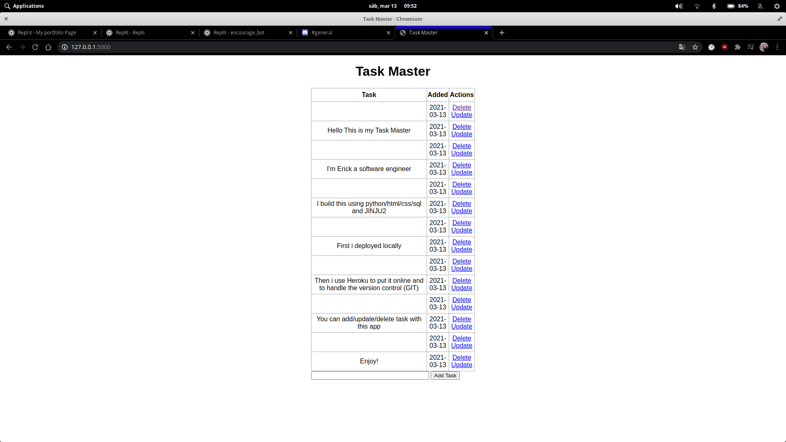

Python/Flask/Html/Css
Definitely the most challenging for me was this project, it taught me so much about how do you deploy a web app while also implementing version control.

As always I used python as my main programming language, but also I was introduced JINJU syntax which is incredibly versatile when it comes to set up a quick web page and focus more on the practicality of it rather than aesthetics
First, I deployed locally to test that everything was working correctly and a couple of days later I found out a website called Heroku where you can deploy your code and add even more functionality (like version control), it was extremely easy to set up and be able to showcase my Tasker app.